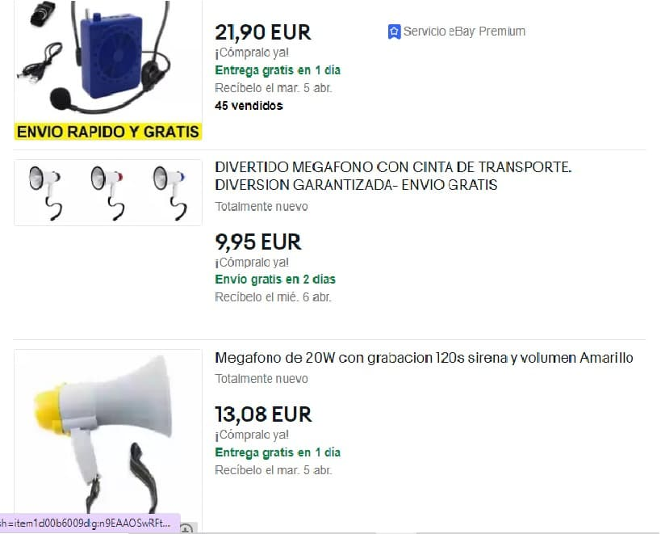

DALE AL MARTILLAZO

CANTAR LA JOTA PARA QUE TE
ESCUCHEN BIEN
Como todos imaginaos ya sabeis para que sirven esta
clase aparatos jejeje.Si juegas en su liga tendras puntos de ventaja
son muy utiles para dar mucha guerra,tiene largo alcance de voz y hay
de muchos precios pero si te gusta la guerrilla urbana estos son
ideales para tener a manos en casa jajajaja y cuando te taladre
el oido respondeles bien alto....
DISTORSIONADOR DE VOZ
Este aparato es ideal para gastar bromas telefonica o para
"Conbinarlo Con El Megafono" puede causar con mucha constancia de uso
a una victima una gran confusion y daño jia jia jia,tambien puede gastar bromas
telefononicas con alguna aplicacion de movil tipo Talku o similar que
sea gratuita hay muchas,puedes jugar
un poco llamando con numeros falsos simulando prefijos de otros paises
haciendo phreak number y hechandote unas risas.

CAMBIADORES DE VOZ
Estos aparatos tambien alteran de una forma parecida la voz
son de poco coste y no son muy bultosos,lo bueno que ya estan
amplificados son muy
faciles de utilizar,pero teniendo mala cabeza tambien hacen mucho daño.
DALE AL MARTILLAZO
CANTAR LA JOTA PARA QUE TE ESCUCHEN BIEN
Como todos imaginaos ya sabeis para que sirven esta clase aparatos jejeje.Si juegas en su liga tendras puntos de ventaja son muy utiles para dar mucha guerra,tiene largo alcance de voz y hay de muchos precios pero si te gusta la guerrilla urbana estos son ideales para tener a manos en casa jajajaja y cuando te taladre el oido respondeles bien alto....
DISTORSIONADOR DE VOZ
Este aparato es ideal para gastar bromas telefonica o para "Conbinarlo Con El Megafono" puede causar con mucha constancia de uso a una victima una gran confusion y daño jia jia jia,tambien puede gastar bromas telefononicas con alguna aplicacion de movil tipo Talku o similar que sea gratuita hay muchas,puedes jugar un poco llamando con numeros falsos simulando prefijos de otros paises haciendo phreak number y hechandote unas risas.
CAMBIADORES DE VOZ
Estos aparatos tambien alteran de una forma parecida la voz son de poco coste y no son muy bultosos,lo bueno que ya estan amplificados son muy faciles de utilizar,pero teniendo mala cabeza tambien hacen mucho daño.